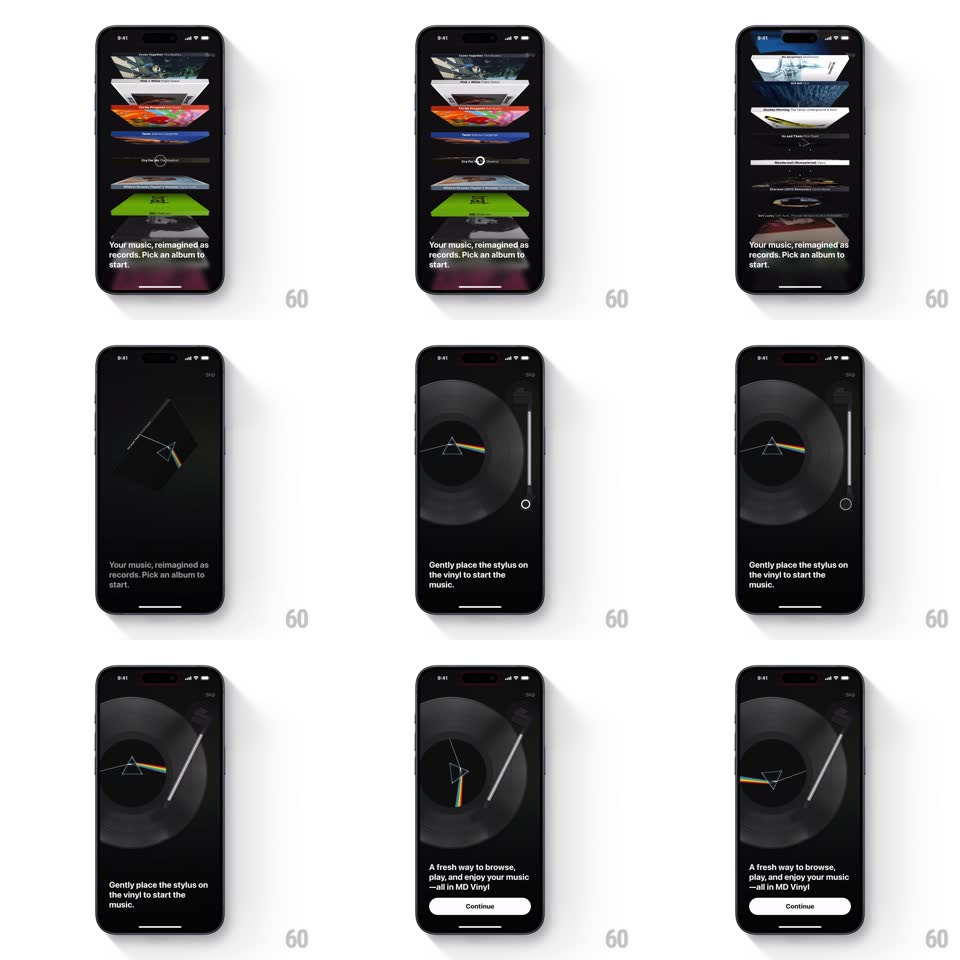

Media
Frame-by-frame

Rebuild this interaction 1:1: MD Vinyl's onboarding - a 3D cover-flow of album covers that morphs into a vinyl player: the picked cover flips away, the record slides out, and the tonearm swings in so you can drop the stylus.

Rebuild this interaction 1:1: MD Vinyl's onboarding - a 3D cover-flow of album covers that morphs into a vinyl player: the picked cover flips away, the record slides out, and the tonearm swings in so you can drop the stylus.
## Integration
Integration: stack-agnostic spec - springs given as stiffness/damping, timed motions as duration + curve; map every value to your framework and animation library of choice.
## Scene
Black screen with a skeuomorphic 3D stack of album covers in cover-flow perspective ("Your music, reimagined as records. Pick an album to start."). Player state: the Dark Side of the Moon vinyl on a turntable with a tonearm and the prompt "Gently place the stylus on the vinyl to start the music.", then "A fresh way to browse, play, and enjoy your music - all in MD Vinyl" with a Continue button.
## Motion spec
Pattern: skeuomorphic morph to turntable, ~1.2s.
- Pick: the chosen cover scales up and flips 90deg away (500ms, ease-in-out) as a black vinyl disc slides out from behind it (450ms, ease-out) and drops onto the platter.
- Tonearm: the arm swings in from the right edge (rotate ~35deg, spring ~260/20, 600ms) and hovers over the disc.
- Stylus drop: on tap, the arm lowers to the record surface (300ms, ease-in) and the disc starts spinning (ramp 0 -> 33rpm over 800ms) with light streaks playing across the grooves.
- Continue: the copy block fades up 14px (300ms) once the record spins.
## Calibration
- Cover-flow covers tilt in 3D (roughly 60deg) with real perspective and reflections.
- The prism artwork renders on the spinning label - it rotates with the disc.
## Reduced motion
The cover crossfades to the player view; the disc spins at constant speed.
## Don't miss
- The vinyl emerges from inside the cover - sleeve and disc are two separate objects.
- The tonearm has mass: it eases in, settles, and only then accepts the drop.